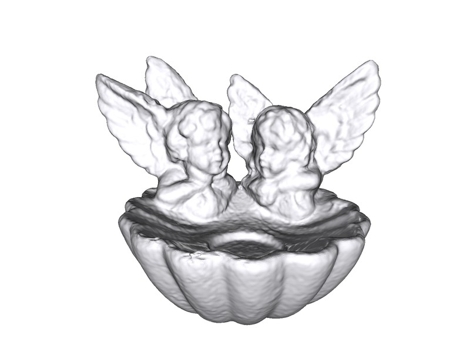

NeurIPS 202640th Conference on Neural Information Processing Systems
M-plicits: Neural Implicit Surfaces via Nested Multiscale Residuals
Surfaces that stay clean when the data is not.
A neural surface representation whose training bands never see the noise, and the real-time algorithms that fall out of it.


↔
iNGP — ABSORBS NOISE
M‑PLICITS — FILTERS IT
Drag. Same scan, 1% noise, both methods.
35–180
FPS, real-time sphere tracing
247K
parameters for full detail
1%
input noise, filtered by construction
5×
faster mesh extraction